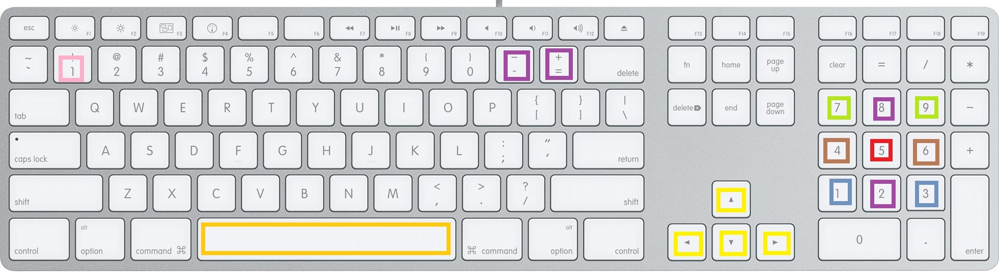

| SAR... |
|  |
| ФАКЮ |
| чому анімований обєкт неправильно відображається, частини десь провалюються -треба робити більше ключових кадрів |
| Чому кістки не прилипають до деяких обєктів -обєкт ДУЖЕ ПРИМІТИВНИй, ТРЕБА ДОДАТИ ЙОМУ ВЕРШИН МОДИФІКАТОР subdivision surface |
| чОМУ ОБЄКТ У х ФОРМАТІ ВИВЕРНУТИЙ, -ТРЕБА ЗМІНиТИ РУКУ |
| чОМУ НЕ ПРАЦЮЄ АНІМАЦІЯ -АНІМАЦІЯ У ПРОГРАМІ ПРАЦЮЄ ТІЛЬКИ КІСТКОВА (_ОДИН СКЕЛЕТ) |
| ДЕ ЗМІНЮВАТИ ОБЄКТИ - my_file |